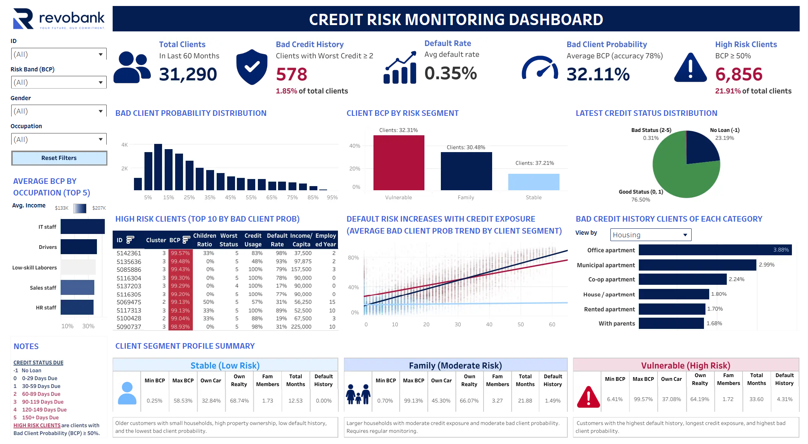

Credit Risk Monitoring Dashboard
Built an end-to-end credit risk analytics solution that estimates default probability, segments customers by risk profile, and provides portfolio monitoring through an interactive executive dashboard.

Project Overview
Summary / Context
Developed a credit risk monitoring solution for a retail bank to proactively identify customers with elevated default risk and improve portfolio management. The project combined demographic information and repayment history to support earlier risk detection and data-driven lending decisions.
Goals
Estimate Bad Client Probability (BCP), segment customers into meaningful risk groups, and identify high-risk clients to support a targeted 5% reduction in portfolio default rate through earlier intervention and continuous portfolio monitoring.
Process
Integrated application and credit history data into a single analytical dataset containing 31,290 clients and up to 60 months of credit records. Performed data preparation and feature engineering, built a logistic regression-based BCP model, applied K-Means clustering for customer segmentation, and designed an interactive Tableau dashboard for risk monitoring.
Output
Delivered a credit risk monitoring dashboard that identified 578 clients with bad credit history and 6,856 high-risk clients (21.9% of the portfolio) with BCP ≥ 50%. The analysis segmented customers into Stable, Family, and Vulnerable groups and revealed that delinquency history, longer credit exposure, limited asset ownership, and certain occupations are associated with elevated risk, supporting targeted monitoring and intervention strategies.
Key Achievements
Tools & Methods
Tools
Methods
Project Visuals